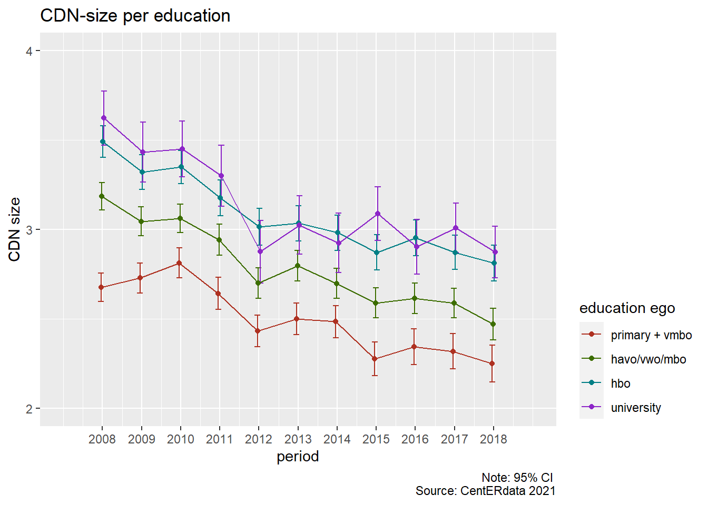
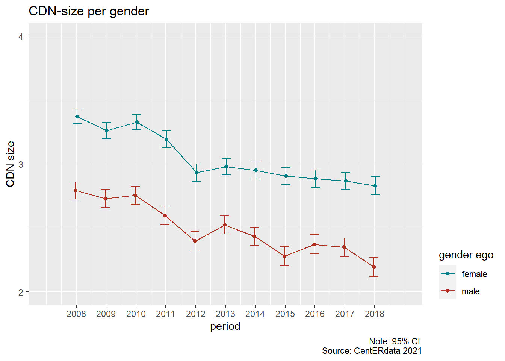
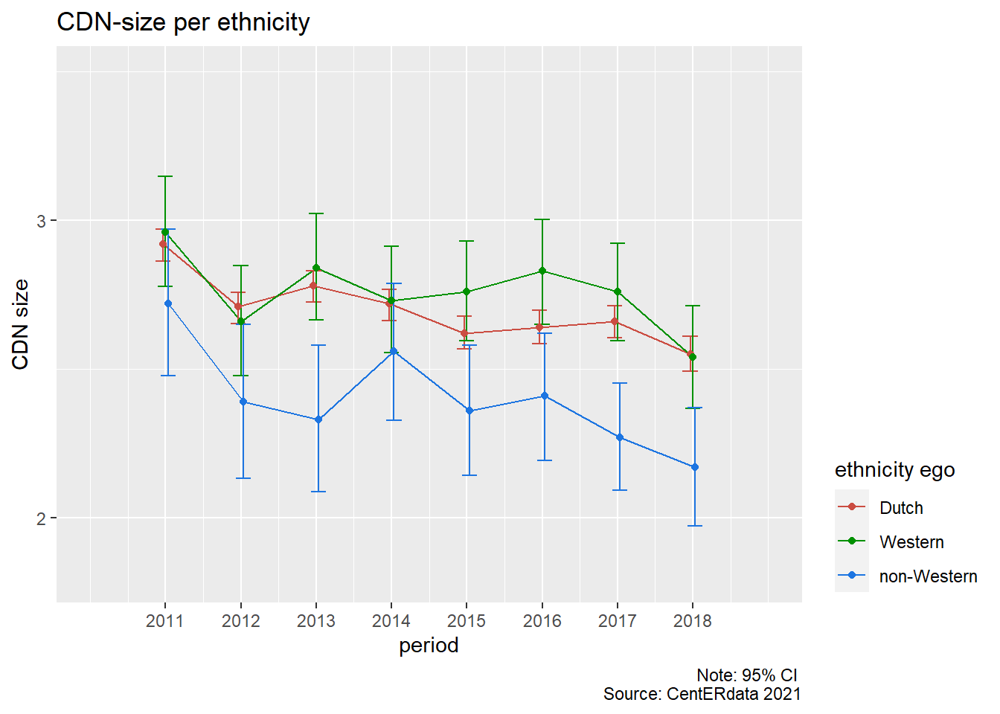

Social segregation in Core Discussion Networks
Jochem Tolsma - Radboud University / University of Groningen, the Netherlands
Last compiled on april, 2022
1 Intro
This website is a replication package for presentation at JCA by Tolsma and Völker (2022).
It contains R code to replicate all Figures.
To copy the code click the button in the upper right corner of the code-chunks.
Use the top menu to navigate to the section of interest.
The source code of this website can be found on Github
Questions can be addressed to Jochem Tolsma.
1.1 Custom functions
pacage.check: Check if packages are installed (and install if not) in R (source).
fpackage.check <- function(packages) {
lapply(packages, FUN = function(x) {
if (!require(x, character.only = TRUE)) {
install.packages(x, dependencies = TRUE)
library(x, character.only = TRUE)
}
})
}1.2 Packages
tidyverse: if you can’t base them, join them
haven: because we have haven-labelled vars in the dataset.
Hmisc: for weighted mean/sd
plotly: for interactive plots
packages = c("tidyverse", "haven", "Hmisc", "plotly")
fpackage.check(packages)2 LISS

2.1 Dependent variables
- CDN size
- CDN homogeneity
Core Discussion Network
We would like to concentrate on your closest contacts now, to form a picture of the social relationships that people have.
It is easier to answer these types of questions by considering concrete persons.
For that reason, we ask that you list a number of persons close to you. If you wish, you can enter nicknames or initials, as long as you can remember who they refer to.
Most people discuss important things with other people.
If you look back on the last six months, with whom did you discuss important things?
Please enter their first names below (to a maximum of 5).
2.1.1 CDN homogeneity
To measure the degree of homogeneity within the CDN we use the (reversed) Krackhard and Stern’s E-I index Krackhardt and Stern (1988). This measure captures the relative prevalence of between-group ties (\(E\)) and within-group ties (\(I\)). It can thus be interpreted as a measure of network segregation.
E-I Index:
\[ EI = - \frac{E-I}{E+I}\] We use a reversed version, so higher scores indicate more homogeneity: 1 is maximum homogeneity; -1 is maximum heterogeneity.
2.2 Independent variables
- Education
- Gender
- Age
- Ethnicity
load(file = "./data/liss_merged_core_file_v3_0921.Rdata")2.3 Representivity
Liss representative with respect to educ measured in five cats?
sample_val <- NA
sample_val[1] <- (table(liss_wide$oplcat.11))[1]
sample_val[2] <- (table(liss_wide$oplcat.11))[2]
sample_val[3] <- (table(liss_wide$oplcat.11))[3] + (table(liss_wide$oplcat.11))[4]
sample_val[4] <- (table(liss_wide$oplcat.11))[5]
sample_val[5] <- (table(liss_wide$oplcat.11))[6]
# cbs https://opendata.cbs.nl/#/CBS/nl/dataset/82816NED/table?ts=1646133108517
datacbs <- c(1265, 2847, 5211, 3122, 1850)
levels(datacbs) <- c("primair", "vmbo", "havo/vwo/mbo", "hbo", "wo")
# round(datacbs / sum(datacbs),2)
pop_val <- datacbs/sum(datacbs)
test <- chisq.test(x = sample_val, p = pop_val, rescale.p = TRUE)
test_data <- data.frame(round(test$observed), round(test$expected), c("primair", "vmbo", "havo/vwo/mbo",
"hbo", "wo"))
names(test_data) <- c("observed (LISS)", "expected (CBS)", "levels")
test_data#> observed (LISS) expected (CBS) levels
#> 1 510 619 primair
#> 2 1424 1393 vmbo
#> 3 2460 2550 havo/vwo/mbo
#> 4 1732 1528 hbo
#> 5 869 905 wotest#>
#> Chi-squared test for given probabilities
#>
#> data: sample_val
#> X-squared = 51.825, df = 4, p-value = 1.501e-10Nope, but nothing really problematic.
2.4 Data prep.
Once with kin-alters included and once excluded.
liss_long %>%
mutate(#size
cdn_size = 5 - rowSums(is.na(cbind(alter_id_1, alter_id_2, alter_id_3, alter_id_4, alter_id_5))),
#education
opl4 = recode(as.numeric(oplmet), '1' = 1, '2'=1, '3'= 2, '4' = 2, '5' = 3, '6'=4, .default=-1 ),
opl4 = na_if(opl4, -1),
opl4 = structure(opl4, labels=c("low", "medium", "high1", "high2")),
across(c(educ_alter1,educ_alter2,educ_alter3,educ_alter4,educ_alter5), ~as.numeric(.x), .names = "{.col}_opl4"),
across(c(educ_alter1_opl4,educ_alter2_opl4,educ_alter3_opl4,educ_alter4_opl4,educ_alter5_opl4), ~recode(.x, '4'=1, '6'=1, '10'=2, '10.5'=2, '11.5'=2 , '15'=3, '16' = 4, .default=-1)),
across(c(educ_alter1_opl4,educ_alter2_opl4,educ_alter3_opl4,educ_alter4_opl4,educ_alter5_opl4), ~na_if(.x, -1)),
educ_I = rowSums(cbind(educ_alter1_opl4,educ_alter2_opl4,educ_alter3_opl4,educ_alter4_opl4,educ_alter5_opl4)==opl4,na.rm=T),
educ_E = rowSums(cbind(educ_alter1_opl4,educ_alter2_opl4,educ_alter3_opl4,educ_alter4_opl4,educ_alter5_opl4)!=opl4,na.rm=T),
educ_EI = - ((educ_E - educ_I) / (educ_E + educ_I)),
cdn_neduc_h = rowSums(cbind(educ_alter1, educ_alter2, educ_alter3, educ_alter4, educ_alter5)==16, na.rm=T),
#gender
gender_alter1 = replace_na(gender_alter1, -1),
gender_alter2 = replace_na(gender_alter2, -1),
gender_alter3 = replace_na(gender_alter3, -1),
gender_alter4 = replace_na(gender_alter4, -1),
gender_alter5 = replace_na(gender_alter5, -1),
cdn_ngender_2 = rowSums(cbind(gender_alter1, gender_alter2, gender_alter3, gender_alter4, gender_alter5)==2, na.rm=T),
cdn_ngender_1 = rowSums(cbind(gender_alter1, gender_alter2, gender_alter3, gender_alter4, gender_alter5)==1, na.rm=T),
gender_I = ifelse(geslacht==2, cdn_ngender_2, cdn_ngender_1),
gender_E = ifelse(geslacht==1, cdn_ngender_2, cdn_ngender_1),
gender_EI = - ((gender_E - gender_I) / (gender_E + gender_I)),
#age
across(c(age_alter1, age_alter2, age_alter3, age_alter4, age_alter5), ~na_if(.x, 14)),
across(c(age_alter1, age_alter2, age_alter3, age_alter4, age_alter5), ~as.integer(.x)),
leeftijd_cat13 = as.integer(cut(as.numeric(liss_long$leeftijd),breaks = c(-Inf, 15, 20, 25, 30, 35, 40,45,50,55,60,65,70, Inf))),
leeftijd_I = rowSums(cbind(age_alter1, age_alter2, age_alter3, age_alter4, age_alter5)==leeftijd_cat13, na.rm=T),
leeftijd_E = rowSums(cbind(age_alter1, age_alter2, age_alter3, age_alter4, age_alter5)!=leeftijd_cat13, na.rm=T),
leeftijd_EI = - ((leeftijd_E - leeftijd_I) / (leeftijd_E + leeftijd_I)),
#etni
etni3 = recode(as.numeric(origin), '0' = 1, '101'=2, '102'= 3, '201' = 2, '202' = 3, '999'=-1, .default=-1 ),
etni3 = na_if(etni3, -1),
etni3 = structure(etni3, labels=c("D", "W", "NW")),
across(c(origin_alter1,origin_alter2,origin_alter3,origin_alter4,origin_alter5), ~as.numeric(.x), .names = "{.col}_etni3"),
across(c(origin_alter1_etni3,origin_alter2_etni3,origin_alter3_etni3,origin_alter4_etni3,origin_alter5_etni3), ~recode(.x, '1'=1, '2'=3, '3'=3, '4'=3, '5'=3 , '6'=2, '7' = 3, '8' = 2, '9' = -1, .default=-1)),
across(c(origin_alter1_etni3,origin_alter2_etni3,origin_alter3_etni3,origin_alter4_etni3,origin_alter5_etni3), ~na_if(.x, -1)),
etni_I = rowSums(cbind(origin_alter1_etni3, origin_alter2_etni3, origin_alter3_etni3, origin_alter4_etni3 ,origin_alter5_etni3)==etni3, na.rm=T),
etni_E = rowSums(cbind(origin_alter1_etni3,origin_alter2_etni3,origin_alter3_etni3,origin_alter4_etni3,origin_alter5_etni3)!=etni3, na.rm=T),
etni_EI = - ((etni_E - etni_I) / (etni_E + etni_I)),
ego_id = nomem_encr) %>%
filter(!is.na(pol_int)) %>%
select(ego_id, survey_wave, leeftijd, leeftijd_cat13, opl4, geslacht, etni3, cdn_size, cdn_neduc_h, educ_EI, cdn_ngender_2, gender_EI, leeftijd_EI, etni_EI, etni_E, origin_alter1_etni3, origin_alter2_etni3, origin_alter3_etni3, origin_alter4_etni3, origin_alter5_etni3) -> datajt
#make similar dataset for non-kin.
#attributes(liss_wide$rel_alter1.1)
#dus gooi alle alters weg met rel_alter - 1 2,3,4,5
# quickest would probably be to go from wide to long, select and go back to wide. but...
liss_long %>%
mutate(across(c(rel_alter1,rel_alter2,rel_alter3,rel_alter4,rel_alter5), ~replace_na(.x, -1)),
alter_id_1 = ifelse(rel_alter1>0 & rel_alter1<6, NA, alter_id_1),
alter_id_2 = ifelse(rel_alter2>0 & rel_alter2<6, NA, alter_id_2),
alter_id_3 = ifelse(rel_alter3>0 & rel_alter3<6, NA, alter_id_3),
alter_id_4 = ifelse(rel_alter4>0 & rel_alter4<6, NA, alter_id_4),
alter_id_5 = ifelse(rel_alter5>0 & rel_alter5<6, NA, alter_id_5),
educ_alter1 = ifelse(rel_alter1>0 & rel_alter1<6, NA, educ_alter1),
educ_alter2 = ifelse(rel_alter2>0 & rel_alter2<6, NA, educ_alter2),
educ_alter3 = ifelse(rel_alter3>0 & rel_alter3<6, NA, educ_alter3),
educ_alter4 = ifelse(rel_alter4>0 & rel_alter4<6, NA, educ_alter4),
educ_alter5 = ifelse(rel_alter5>0 & rel_alter5<6, NA, educ_alter5),
gender_alter1 = ifelse(rel_alter1>0 & rel_alter1<6, NA, gender_alter1),
gender_alter2 = ifelse(rel_alter2>0 & rel_alter2<6, NA, gender_alter2),
gender_alter3 = ifelse(rel_alter3>0 & rel_alter3<6, NA, gender_alter3),
gender_alter4 = ifelse(rel_alter4>0 & rel_alter4<6, NA, gender_alter4),
gender_alter5 = ifelse(rel_alter5>0 & rel_alter5<6, NA, gender_alter5),
origin_alter1 = ifelse(rel_alter1>0 & rel_alter1<6, NA, origin_alter1),
origin_alter2 = ifelse(rel_alter2>0 & rel_alter2<6, NA, origin_alter2),
origin_alter3 = ifelse(rel_alter3>0 & rel_alter3<6, NA, origin_alter3),
origin_alter4 = ifelse(rel_alter4>0 & rel_alter4<6, NA, origin_alter4),
origin_alter5 = ifelse(rel_alter5>0 & rel_alter5<6, NA, origin_alter5),
) %>%
mutate(#size
cdn_size = 5 - rowSums(is.na(cbind(alter_id_1, alter_id_2, alter_id_3, alter_id_4, alter_id_5))),
#education
opl4 = recode(as.numeric(oplmet), '1' = 1, '2'=1, '3'= 2, '4' = 2, '5' = 3, '6'=4, .default=-1 ),
opl4 = na_if(opl4, -1),
opl4 = structure(opl4, labels=c("low", "medium", "high1", "high2")),
across(c(educ_alter1,educ_alter2,educ_alter3,educ_alter4,educ_alter5), ~as.numeric(.x), .names = "{.col}_opl4"),
across(c(educ_alter1_opl4,educ_alter2_opl4,educ_alter3_opl4,educ_alter4_opl4,educ_alter5_opl4), ~recode(.x, '4'=1, '6'=1, '10'=2, '10.5'=2, '11.5'=2 , '15'=3, '16' = 4, .default=-1)),
across(c(educ_alter1_opl4,educ_alter2_opl4,educ_alter3_opl4,educ_alter4_opl4,educ_alter5_opl4), ~na_if(.x, -1)),
educ_I = rowSums(cbind(educ_alter1_opl4,educ_alter2_opl4,educ_alter3_opl4,educ_alter4_opl4,educ_alter5_opl4)==opl4,na.rm=T),
educ_E = rowSums(cbind(educ_alter1_opl4,educ_alter2_opl4,educ_alter3_opl4,educ_alter4_opl4,educ_alter5_opl4)!=opl4,na.rm=T),
educ_EI = - ((educ_E - educ_I) / (educ_E + educ_I)),
cdn_neduc_h = rowSums(cbind(educ_alter1, educ_alter2, educ_alter3, educ_alter4, educ_alter5)==16, na.rm=T),
#gender
gender_alter1 = replace_na(gender_alter1, -1),
gender_alter2 = replace_na(gender_alter2, -1),
gender_alter3 = replace_na(gender_alter3, -1),
gender_alter4 = replace_na(gender_alter4, -1),
gender_alter5 = replace_na(gender_alter5, -1),
cdn_ngender_2 = rowSums(cbind(gender_alter1, gender_alter2, gender_alter3, gender_alter4, gender_alter5)==2, na.rm=T),
cdn_ngender_1 = rowSums(cbind(gender_alter1, gender_alter2, gender_alter3, gender_alter4, gender_alter5)==1, na.rm=T),
gender_I = ifelse(geslacht==2, cdn_ngender_2, cdn_ngender_1),
gender_E = ifelse(geslacht==1, cdn_ngender_2, cdn_ngender_1),
gender_EI = - ((gender_E - gender_I) / (gender_E + gender_I)),
#age
across(c(age_alter1, age_alter2, age_alter3, age_alter4, age_alter5), ~na_if(.x, 14)),
across(c(age_alter1, age_alter2, age_alter3, age_alter4, age_alter5), ~as.integer(.x)),
leeftijd_cat13 = as.integer(cut(as.numeric(liss_long$leeftijd),breaks = c(-Inf, 15, 20, 25, 30, 35, 40,45,50,55,60,65,70, Inf))),
leeftijd_I = rowSums(cbind(age_alter1, age_alter2, age_alter3, age_alter4, age_alter5)==leeftijd_cat13, na.rm=T),
leeftijd_E = rowSums(cbind(age_alter1, age_alter2, age_alter3, age_alter4, age_alter5)!=leeftijd_cat13, na.rm=T),
leeftijd_EI = - ((leeftijd_E - leeftijd_I) / (leeftijd_E + leeftijd_I)),
#etni
etni3 = recode(as.numeric(origin), '0' = 1, '101'=2, '102'= 3, '201' = 2, '202' = 3, '999'=-1, .default=-1 ),
etni3 = na_if(etni3, -1),
etni3 = structure(etni3, labels=c("D", "W", "NW")),
across(c(origin_alter1,origin_alter2,origin_alter3,origin_alter4,origin_alter5), ~as.numeric(.x), .names = "{.col}_etni3"),
across(c(origin_alter1_etni3,origin_alter2_etni3,origin_alter3_etni3,origin_alter4_etni3,origin_alter5_etni3), ~recode(.x, '1'=1, '2'=3, '3'=3, '4'=3, '5'=3 , '6'=2, '7' = 3, '8' = 2, '9' = -1, .default=-1)),
across(c(origin_alter1_etni3,origin_alter2_etni3,origin_alter3_etni3,origin_alter4_etni3,origin_alter5_etni3), ~na_if(.x, -1)),
etni_I = rowSums(cbind(origin_alter1_etni3, origin_alter2_etni3, origin_alter3_etni3, origin_alter4_etni3 ,origin_alter5_etni3)==etni3, na.rm=T),
etni_E = rowSums(cbind(origin_alter1_etni3,origin_alter2_etni3,origin_alter3_etni3,origin_alter4_etni3,origin_alter5_etni3)!=etni3, na.rm=T),
etni_EI = - ((etni_E - etni_I) / (etni_E + etni_I)),
ego_id = nomem_encr) %>%
filter(!is.na(pol_int)) %>%
select(ego_id, survey_wave, leeftijd, leeftijd_cat13, opl4, geslacht, etni3, cdn_size, cdn_neduc_h, educ_EI, cdn_ngender_2, gender_EI, leeftijd_EI, etni_EI, etni_E) -> datajt_nk
test <- cut(as.numeric(liss_long$leeftijd),breaks = c(-Inf, 15, 20, 25, 30, 35, 40,45,50,55,60,65,70, Inf))
#levels(test)3 CDN size
3.1 Education
datajt %>%
group_by(survey_wave, opl4) %>%
summarise(N = n(),
cdn_sizeM = mean(cdn_size, na.rm=T),
sd = sd(cdn_size, na.rm=T)) %>%
mutate(
se = sd / sqrt(N) ,
conf.interval = .95,
ci = se * qt(conf.interval/2 + .5, N-1)) %>%
na.omit() -> tgc
ggplot(tgc, aes(x=as.numeric(survey_wave), y=cdn_sizeM, colour=as.factor(opl4))) +
geom_errorbar(aes(ymin=cdn_sizeM-ci, ymax=cdn_sizeM+ci), width=.6, position=position_dodge(0.1)) +
geom_line(position=position_dodge(0.1)) +
geom_point(position=position_dodge(0.1)) +
scale_x_continuous(breaks = 1:11, limits = c(0,12) , labels = as.character(c(2008:2018))) +
scale_y_continuous(breaks = 1:5, limits = c(2,4)) +
labs(title = "CDN-size per education", caption = "Note: 95% CI \n Source: CentERdata 2021",
y = "CDN size", x="period") +
scale_colour_hue(name="education ego", # Legend label, use darker colors
breaks=c("1", "2", "3", "4"),
labels=c("primary + vmbo", "havo/vwo/mbo", "hbo", "university"),
l=40) + # Use darker colors, lightness=40
theme(legend.justification=c(1,0),
legend.position=c("right")) 
3.2 Gender
datajt %>%
group_by(survey_wave, geslacht) %>%
summarise(N = n(),
cdn_sizeM = mean(cdn_size, na.rm=T),
sd = sd(cdn_size, na.rm=T)) %>%
mutate(
se = sd / sqrt(N) ,
conf.interval = .95,
ci = se * qt(conf.interval/2 + .5, N-1)) %>%
na.omit() -> tgc
ggplot(tgc, aes(x=as.numeric(survey_wave), y=cdn_sizeM, colour=as.factor(geslacht))) +
geom_errorbar(aes(ymin=cdn_sizeM-ci, ymax=cdn_sizeM+ci), width=.6, position=position_dodge(0.1)) +
geom_line(position=position_dodge(0.1)) +
geom_point(position=position_dodge(0.1)) +
scale_x_continuous(breaks = 1:11, limits = c(0,12) , labels = as.character(c(2008:2018))) +
scale_y_continuous(breaks = 1:5, limits = c(2,4)) +
labs(title = "CDN-size per gender", caption = "Note: 95% CI \n Source: CentERdata 2021",
y = "CDN size", x="period") +
scale_colour_hue(name="gender ego", # Legend label, use darker colors
breaks=c("2", "1"),
labels=c("female", "male"),
l=40) + # Use darker colors, lightness=40
theme(legend.justification=c(1,0),
legend.position=c("right")) 
3.3 Age
datajt %>%
group_by(survey_wave, leeftijd_cat13) %>%
summarise(N = n(),
cdn_sizeM = mean(cdn_size, na.rm=T),
sd = sd(cdn_size, na.rm=T)) %>%
mutate(
se = sd / sqrt(N) ,
conf.interval = .95,
ci = se * qt(conf.interval/2 + .5, N-1)) %>%
na.omit() -> tgc
tgc$period <- as.numeric(tgc$survey_wave) + 2007
tgc$size <- round(tgc$cdn_sizeM, 2)
tgc$age <- as.factor(tgc$leeftijd_cat13)
levels(tgc$age) <- levels(test)
plot <- ggplot(tgc, aes(x=period, y=size, colour=age)) +
geom_line(position=position_dodge(0.1), aes(color=age)) +
geom_errorbar(aes(ymin=cdn_sizeM-ci, ymax=cdn_sizeM+ci), width=.6, position=position_dodge(0.1)) +
geom_point(position=position_dodge(0.1)) +
scale_x_continuous(breaks = 2008:2018, limits = c(2007,2019) , labels = as.character(c(2008:2018))) +
scale_y_continuous(breaks = 1:5, limits = c(2,4)) +
labs(title = "CDN-size per age", caption = "Note: 95% CI \n Source: CentERdata 2021",
y = "CDN size", x="period") +
scale_colour_hue(name="age ego", # Legend label, use darker colors
l=50) + # Use darker colors, lightness=40
theme(legend.justification=c(1,0),
legend.position=c("right"))
#plot
ggplotly(plot) %>%
layout(margin = list(b=100), annotations = list(x=2017, y = 1.9, showarrow = F, font = list(size=10), text=" \n \n \n \n \n \n Note: 95% CI \n Source: CentERdata 2021"))3.4 Ethnicity
datajt %>%
group_by(survey_wave, etni3) %>%
summarise(N = n(),
cdn_sizeM = mean(cdn_size, na.rm=T),
sd = sd(cdn_size, na.rm=T)) %>%
mutate(
se = sd / sqrt(N) ,
conf.interval = .95,
ci = se * qt(conf.interval/2 + .5, N-1)) %>%
na.omit() -> tgc
tgc$period <- as.numeric(tgc$survey_wave) + 2007
tgc$size <- round(tgc$cdn_sizeM, 2)
tgc$etni <- as.factor(tgc$etni3)
levels(tgc$etni) <- c("Dutch", "Western", "non-Western")
plot <- ggplot(tgc, aes(x=period, y=size, colour=etni)) +
geom_line(position=position_dodge(0.1)) +
geom_errorbar(aes(ymin=cdn_sizeM-ci, ymax=cdn_sizeM+ci), width=.6, position=position_dodge(0.1)) +
geom_point(position=position_dodge(0.1)) +
scale_x_continuous(breaks = 2011:2018, limits = c(2010,2019) , labels = as.character(c(2011:2018))) +
scale_y_continuous(breaks = 1:5, limits = c(1.8,3.5)) +
labs(title = "CDN-size per ethnicity", caption = "Note: 95% CI \n Source: CentERdata 2021",
y = "CDN size", x="period") +
scale_colour_hue(name="ethnicity ego", # Legend label, use darker colors
l=50) + # Use darker colors, lightness=40
theme(legend.justification=c(1,0),
legend.position=c("right"))
plot
#plot
ggplotly(plot) %>%
layout(margin = list(b=100), annotations = list(x=2018, y = 1.8, showarrow = F, font = list(size=10), text="\n \n \n \n \n \n \n \n \n Note: 95% CI \n Source: CentERdata 2021"))4 Segregation in CDN
EI-Index:
4.1 Education
datajt %>%
filter(leeftijd>24 & !is.na(opl4)) %>%
group_by(survey_wave, opl4) %>%
summarise(N = n(),
cdn_educ_EIM = mean(educ_EI, na.rm=T),
sd = sd(educ_EI, na.rm=T),
cdn_educ_EIM_w = wtd.mean(educ_EI, cdn_size, normwt = FALSE, na.rm = TRUE), #perhaps better to set normwt to TRUE
sd_w = sqrt(wtd.var(educ_EI, cdn_size, normwt = FALSE, na.rm = TRUE))) %>%
mutate(
conf.interval = .95,
se = sd / sqrt(N) ,
ci = se * qt(conf.interval/2 + .5, N-1),
se_w = sd_w / sqrt(N) , #is this correct??
ci_w = se_w * qt(conf.interval/2 + .5, N-1)) %>%
na.omit() -> tgc
datajt_nk %>%
filter(leeftijd>24) %>%
group_by(survey_wave, opl4) %>%
summarise(N = n(),
cdn_educ_EIM = mean(educ_EI, na.rm=T),
sd = sd(educ_EI, na.rm=T)) %>%
mutate(
se = sd / sqrt(N) ,
conf.interval = .95,
ci = se * qt(conf.interval/2 + .5, N-1)) %>%
na.omit() -> tgc_nktgc$period <- as.numeric(tgc$survey_wave) + 2007
tgc$homogeneity <- round(tgc$cdn_educ_EIM, 2)
tgc$education <- as.factor(tgc$opl4)
levels(tgc$education) <- c("primary + vmbo", "havo/vwo/mbo", "hbo", "university")
plot <- ggplot(tgc, aes(x=period, y=homogeneity, colour=education)) +
geom_line(position=position_dodge(0.1)) +
geom_errorbar(aes(ymin=homogeneity-ci, ymax=homogeneity+ci), width=.6, position=position_dodge(0.1)) +
geom_point(position=position_dodge(0.1)) +
scale_x_continuous(breaks = 2008:2018, limits = c(2007, 2019), labels = as.character(c(2008:2018))) +
scale_y_continuous(breaks = -1:1, limits = c(-1,1)) +
labs(title = "Educational homogeneity in CDN", caption = "Note: 95% CI \n Source: CentERdata 2021",
y = "EI-index", x="period") +
scale_colour_hue(name="education ego", # Legend label, use darker colors
#breaks=c("1", "2", "3", "4"),
#labels=c("primary + vmbo", "havo/vwo/mbo", "hbo", "university"),
l=40) + # Use darker colors, lightness=40
theme(legend.justification=c(1,0),
legend.position="right")
#plot
#plot
ggplotly(plot) %>%
layout(margin = list(b=100), annotations = list(x=2018, y = -1.1, showarrow = F, font = list(size=10), text="\n \n \n \n \n \n \n \n Note: 95% CI \n Source: CentERdata 2021"))4.2 Gender
datajt %>%
filter(cdn_size>0 & !is.na(geslacht)) %>%
group_by(survey_wave, geslacht) %>%
summarise(N = n(),
gender_EI_mean = mean(gender_EI, na.rm=T),
sd = sd(gender_EI, na.rm=T)) %>%
mutate(
se = sd / sqrt(N) ,
conf.interval = .95,
ci = se * qt(conf.interval/2 + .5, N-1)) -> tgc
tgc$period <- as.numeric(tgc$survey_wave) + 2007
tgc$homogeneity <- round(tgc$gender_EI_mean, 2)
tgc$gender <- as.factor(tgc$geslacht)
levels(tgc$gender) <- c("male", "female")
plot <- ggplot(tgc, aes(x=period, y=homogeneity, colour=gender)) +
geom_line(position=position_dodge(0.1)) +
geom_errorbar(aes(ymin=homogeneity-ci, ymax=homogeneity+ci), width=.6, position=position_dodge(0.1)) +
geom_point(position=position_dodge(0.1)) +
scale_x_continuous(breaks = 2008:2018, limits = c(2007,2019), labels = as.character(c(2008:2018))) +
scale_y_continuous(breaks = c(-.5,0,.5), limits = c(-.5,.5)) +
labs(title = "Gender homogeneity in CDN", caption = "Note: 95% CI \n Source: CentERdata 2021",
y = "EI-index", x="period") +
scale_colour_hue(name="gender ego", # Legend label, use darker colors
#breaks=c("2", "1"),
#labels=c("female", "male"),
l=40) + # Use darker colors, lightness=40
theme(legend.justification=c(1,0),
legend.position="right")
ggplotly(plot) %>%
layout(margin = list(b=100), annotations = list(x=2018, y = -.5, showarrow = F, font = list(size=10), text="\n \n \n \n \n \n \n \n \n \n Note: 95% CI \n Source: CentERdata 2021"))4.3 Age
4.4 Ethnicity
5 Take home message
- The Core Discussion Network is segregated.
- The Degree of segregation is not very extreme.
- There is no clear trend that shows increasing segregation.
References
Copyright © 2022 Jochem Tolsma